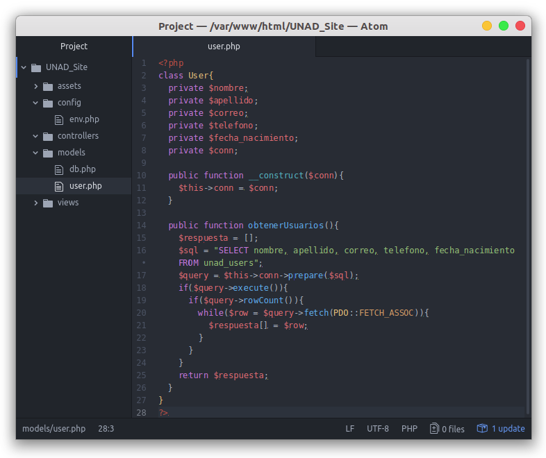

¿Cómo obtenemos los usuarios de nuestra base de datos?, claro, con un "SELECT * FROM unad_users" los tendremos, pero para tener una aplicación sólida hay que aplicar otras lógicas e implementar algunas clases potentes.
Ya en la creación de la clase Db usamos PDO (PHP Data Objects), ahora crearemos una función pública "obtenerUsuarios" donde no recibiremos nada, pues no necesitamos recibir nada para poder obtenerlos de la base de datos.
Los pasos a seguir para hacer una consulta exitosa son:
- Escribir nuestra consulta, seleccionando los datos exactos que queremos recibir (para así evitar extraer datos importantes, por ejemplo, contraseñas)
- Preparar la consulta (en el caso de variables, para evitar SQL Injection, esta es una buena manera de aplicar variables a la consulta, en este caso no aplicaremos variables).
- Ejecutamos la consulta
- Si es exitosa, retornamos la información.
Sabiendo esto, haremos la consulta: SELECT nombre, apellido, correo, telefono, fecha_nacimiento FROM unad_users

Explicando este código:
- Iniciamos una variable $respuesta con un array vacío (Si no logramos obtener nada de la base de datos, retornaremos esa variable vacía).
- Escribimos en la variable $sql nuestra consulta
- Preparamos la consulta
- La ejecutamos dentro de un if para validar si se ejecuta correctamente o hay algún error.
- La validación de "if ( $query->rowCount() )" es sumamente sencilla:
- Si hacemos "if ( 0 )", este no entrará.
- Si hacemos "if ( 1 )", o cualquier número mayor que 0, este sí entrará.
- Entonces estamos colocando el número de filas que retornó nuestra consulta, si retornó 0, entonces será un if(0) y nunca entrará, de lo contrario si entrará si es un 1 o un 5 o tal vez un 100.
- En el while le colocamos a una variable temporal $row, el fetch que le hagamos a nuestra consulta, es decir, extraemos los datos, éste lo hace por fila, así que el while se encargará de repetir este fetch por cada fila.
- Luego de que la extraiga la fila le hace un push a nuestro array $respuesta, guardando dicha fila.
- Al final del while, tendremos el array $respuesta con el total de filas que nuestra consulta obtuvo, entonces lo retornamos.